El aprendizaje profundo es parte de una teoría de mayor alcance
conocida como aprendizaje estadístico o aprendizaje de máquina. Hacemos
una distinción entre ambos términos, llamando aprendizaje estadístico a
la parte teórica del área , mientras que el término de
aprendizaje de máquina o automático referirá a la aplicación de los
métodos y algoritmos orientados a aplicaciones específicas. De esta
forma, el aprendizaje estadístico nos dará herramientas teóricas para
abordar a las redes neuronales. Asimismo, podremos considerar la
implementación de modelos de redes neuronales como parte del aprendizaje
automático.
Por tanto, antes de partir a estudiar las redes neuronales, es
importante conocer las nociones básicas de la teoría de aprendizaje. En
este capítulo desarrollamos estas nociones; introducimos el concepto de
aprendizaje, los tipos más comunes de aprendizaje, así como la
metodología general que se sigue cuando se usa un modelo de aprendizaje
para resolver un problema.
Definición de aprendizaje
El concepto de aprendizaje es central en nuestro estudio. Buscamos
que las máquinas “aprendan” a partir de experiencia para que sean
capaces de resolver problemas específicos. Aquí el término de
aprendizaje difiere a lo que se podría entender en ámbitos como la
psicología o las ciencias cognitivas, pues nos orientamos a definir
agentes computacionales que resuelvan tareas más que a entender los
procesos cognitivos humanos. Con base en esto, damos una definición de
aprendizaje basada en .
Definición 1.1 (Aprendizaje). Un programa de
computadora se dice que aprende de la experiencia E con respecto a una
tarea T y una medida de desempeño P, si su desempeño con respecto a T,
medido con P, mejora con la experiencia E.
Como se desprende de esta definición, decimos que un programa aprende
cuando mejora su desempeño en una tarea con base en experiencia
proporcionada. Esta definición se liga al modelo estándar de la
inteligencia artificial , en donde se busca que los
programas solucionen las tareas de manera óptima; esto es, buscando los
valores óptimos para alguna medida de desempeño. Lo que caracteriza a
los modelos de aprendizaje y los diferencia de otros métodos en
inteligencia artificial, es que su desempeño varía con base en
experiencia que los modelos incorporan. Esta experiencia no son otra
cosa que datos que el programa observa para inferir soluciones al
problema con base en la información que la máquina puede encontrar en
ellos. De aquí proviene la analogía con el aprendizaje humano, pues el
programa será mejor en resolver un problema entre más datos (instancias
del problema) vea. Sin embargo, no tendría sentido que el programa
observará todas las instancias del problema, pues esto implicaría que
conocemos las soluciones al problema.
El aprendizaje estadístico observa un conjunto limitado de instancias
del problema que permitan al programa generalizar las soluciones a otras
instancias que no hayan sido vistas previamente. Por ejemplo, si el
objetivo del programa es solucionar ecuaciones diferenciales ordinarias,
podemos darle a éste un conjunto finito de ecuaciones (y sus soluciones)
para que infiera estrategias para solucionarlas, de tal forma que cuando
se le presente una nueva ecuación pueda encontrar su solución sin
conocerla previamente. Presentamos otro ejemplo a continuación.
Ejemplo 1.1. Para complementar la definición de
aprendizaje que hemos dado, pensemos en el siguiente ejemplo: supongamos
que queremos crear un programa que se dedique a clasificar spam de
nuestro correo electrónico. Entonces, para poder aplicar un algoritmo de
aprendizaje requerimos definir los siguientes elementos:
Tarea:
La tarea T es determinar si un correo electrónico, una cadena de
texto, es correo deseado (ham) o correo no deseado (spam).
Experiencia:
La experiencia E consistirá en el conjunto de correos
electrónicos en los que previamente el usuario ha determinado si se
trata de correo deseado o no deseado.
Desempeño:
Podemos definir diferentes medidas de desempeño P: una medida
simple sería determinar el porcentaje de correo electrónico
correctamente clasificado ya sea en ham o spam.
De esta forma, un algoritmo de aprendizaje automático toma los
correos electrónicos previamente clasificados para poder inferir qué es
lo que determina si se trata de correo deseado o no deseado. Asimismo,
seríamos capaces de evaluar qué tan bien ha aprendido a clasificar los
correos.
Podemos observar que en la mayoría de los casos, el que un correo
sea spam depende de los gustos de los usuarios. Por tanto, no podemos
definir un algoritmo preciso que determine cuando se trata de spam o no.
Un algoritmo de aprendizaje tiene la ventaja de que puede aprender lo
que un usuario en particular considera spam. Si bien, en principio
podría tener un desempeño bajo, la experiencia que le proporciona el
usuario (que en este caso podría consistir en corregir los errores del
programa señalando cuando ha enviado un correo a spam sin serlo o cuando
ha dejado pasar un correo que para el usuario es spam) el algoritmo de
aprendizaje puede mejorar su desempeño.
Modelos de aprendizaje
estadístico
Nuestro problema consiste en entender y construir máquinas que
aprendan. Como en otros problemas con que los humanos nos enfrentamos,
resulta aquí de suma importancia el determinar un modelo matemático que
describa las capacidades que tiene una máquina para aprender sobre
problemas. Se han hecho varias propuestas en la teoría de aprendizaje
estadístico: una de ellas, propuesta por , es el aprendizaje PAC (por sus
siglas en inglés Probably Approximate Correct Learning); otra
propuesta es el aprendizaje VC (siglas de los apellidos de sus
creadores, los investigadores rusos Vladimir Vapnik y Alexey
Chervonenkis). Se ha probado que ambas teorías son equivalentes. Aquí
nos enfocamos en la última: la teoría VC.
En este marco, propone el modelo
general de aprendizaje a partir de ejemplos, el cual busca
sintetizar el proceso de aprendizaje por medio de tres elementos
esenciales:
Generador: Se encarga de generar la experiencia
(ejemplos), que se describen a partir de una distribución de
probabilidad
.
Generalmente estos ejemplos
son vectores y la función de probabilidad define la forma en que se
comportan.
Supervisor: Determina una solución al problema,
asociando a cada ejemplo
su solución
.
La supervisión puede o no estar presente durante el aprendizaje, en cada
caso hablaremos de un tipo distinto de aprendizaje.
Máquina de aprendizaje: Es una función
que toma un ejemplo de entrada y le asigna un valor de salida, de tal
forma que
,
donde
es una predicción hecha por la máquina de aprendizaje que busca ser lo
más cercana a la supervisión
.
De esta forma, el objetivo del aprendizaje automático es encontrar
una máquina de aprendizaje que genere salidas
que sean lo más cercanas posibles a los elementos del supervisor
.
En este sentido, la máquina de aprendizaje es una función:
donde
es el espacio de los datos y
el de las soluciones. El generador proporciona un conjunto de datos
,
mientras que el supervisor asocia a cada dato
una respuesta
.
La Figura 1.1 presenta de forma esquemática este
modelo de aprendizaje.
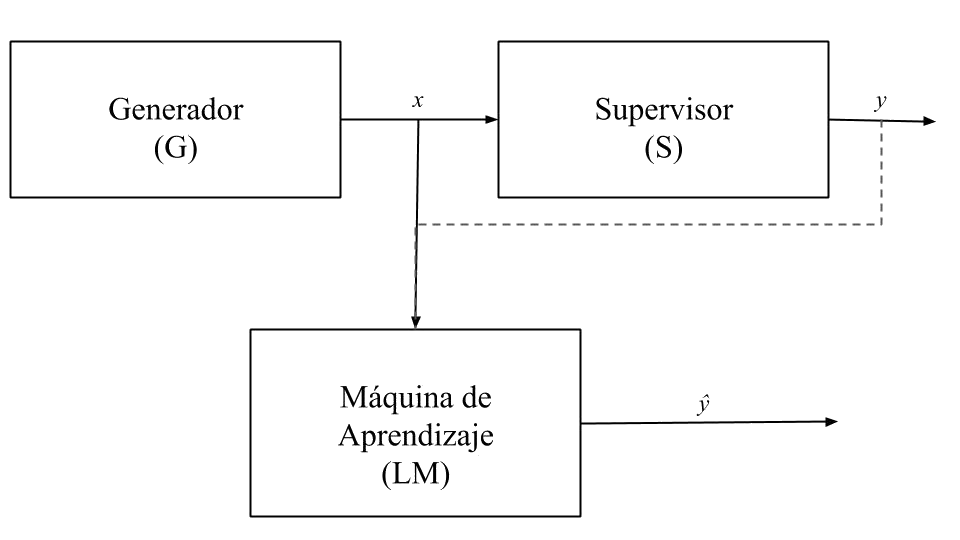
Esquema del modelo general de aprendizaje a partir de
ejemplos
Generalmente, la función
depende de un conjunto de parámetros o pesos que se modifican cada vez
que la máquina ve un nuevo ejemplo;1 de esta forma, estos
pesos se ajustan hasta obtener las salidas correctas en la máquina de
aprendizaje. Por lo que podemos pensar a la máquina de aprendizaje como
la función:
Donde
puede llamarse el espacio de hipótesis; es decir, las
soluciones al problema deben buscarse en
,
de tal forma que el proceso de aprendizaje consista en buscar los
elementos del espacio
que resuelvan el problema de forma óptima. Entonces, si
es una hipótesis, podemos determinar la máquina de aprendizaje como la
función:
El objetivo del proceso aprendizaje es encontrar el conjunto de pesos
que solucione el problema de manera adecuada. Idealmente, buscamos que
,
es decir, que la máquina de aprendizaje de exactamente las mismas
respuestas que el supervisor. Esto no es factible en general. Pero
podemos encontrar aproximaciones que sean lo más cercanas posibles a las
respuestas del supervisor.
Un paso importante de la teoría de aprendizaje estadístico es
convertir el problema de aprendizaje en un problema de optimización.
Para esto, debemos definir una función de riesgo (también llamada
función objetivo)
,
que sea capaz de decirnos que tan bien una máquina de aprendizaje
soluciona un problema. De tal forma que nuestro objetivo se definirá
como:
La función
dependerá del problema de aprendizaje. De forma general usaremos sólo
para denotar esta función. De esta forma, nuestro objetivo será
encontrar los parámetros que mejor resuelvan el problema a partir de
minimizar la función de riesgo.
Antes de pasar a explicar con más a detalle la forma en que podemos
solucionar los problemas por medio del aprendizaje, pasamos a exponer de
manera breve los diferentes tipos de aprendizaje, que también se
desprenden del modelo de aprendizaje a partir de ejemplos. De esta
forma, nos adentramos al entrenamiento y evaluación donde profundizamos
en la función de riesgo así como en las capacidades de generalización de
una máquina de aprendizaje.
Tipos de aprendizaje
En la Figura 1.1 se puede ver una línea punteada entre
la salida
del supervisor y la máquina de aprendizaje. Lo que esto quiere indicar
es que la máquina de aprendizaje puede trabajar tanto con información
supervisada (el supervisor le proporciona algún conocimiento de las
salidas esperadas) o bien sin tal información. Lo que queda claro es que
la máquina de aprendizaje necesita de un conjunto de ejemplos para
aprender; ejemplos que son proporcionados por el generador. A este
conjunto de ejemplos se le suele llamar conjunto de
datos (en inglés dataset). Los datos en este conjunto
de datos son esenciales en el aprendizaje, pues dotan a la máquina de
aprendizaje de ejemplos para que ésta pueda aprender.
Los ejemplos que se le proporcionan a la máquina de aprendizaje
pueden contener o no información del supervisor. Cuando contienen esta
información, los ejemplos dotan a la máquina de información sobre las
salidas esperadas. Por ejemplo, si la tarea es la clasificación de spam,
un ejemplo
contará con un correo electrónico
(que puede ser la cadena textual o alguna otra codificación del texto)
así como una indicación
,
que le indicará a la máquina si
es spam (1) o si no lo es (0). Por tanto, durante su proceso de
aprendizaje, la máquina podrá ver en algunos ejemplos cuáles son las
salidas esperadas. A partir del conjunto de ejemplos que se proporcionan
en la tarea, podemos definir los tipos de aprendizaje.
Definición 1.2 (Aprendizaje supervisado). El
aprendizaje supervisado es aquel que se realiza con un conjunto de datos
que cuenta con una supervisión (solución esperada por cada ejemplo). El
conjunto de datos supervisado está determinado como:
donde
es el conjunto de soluciones o supervisión del problema.
Dentro del aprendizaje supervisado la máquina de aprendizaje aprende
en base a ejemplos que cuentan con la solución esperada de éstos, de tal
forma que la máquina pueda ver lo que se espera obtener y generalizar
este conocimiento a datos que no han sido vistos. Dentro del aprendizaje
supervisado también tenemos dos grandes problemas que resolver. El
primero de estos problemas refiere a la clasificación.
Definición 1.3 (Problema de clasificación). Un
problema de clasificación es un problema supervisado, donde se busca
estimar una función
;
es decir, clasifica los datos en clases discretas.
Como se puede observar, la clasificación se basa en asignar a cada
dato un valor de clase. Un tipo de clasificación común es la
clasificación binaria, en donde el conjunto de clases es
.
Estas clases pueden representar diferentes cosas; por ejemplo, una
enfermedad (1) y la ausencia de ésta (0), si el dato representa a un
animal (1) o no (0), etc.
El segundo problema dentro del aprendizaje supervisado es el de
regresión.
Definición 1.4 (Problema de regresión). Un
problema de regresión es un problema supervisado en donde se busca
estimar una función
,
;
en este caso,
toma valores continuos.
En la regresión los valores que se asignan a los datos de entrada son
continuos. Por tanto, no es necesario (de hecho, no es factible) que la
máquina de aprendizaje observe todos los valores posibles en el
entrenamiento. Lo que se busca es estimar una función continua que,
cuando llegué un nuevo dato, pueda asignarle un valor real. Un caso
particular es cuando se estima un escalar; es decir, se busca una
función
.
Algunos ejemplos de este tipo de problemas es la estimación de precios:
dada la descripción de un producto por medio de un vector en
,
se busca determinar un precio para éste.
En contraste con el aprendizaje supervisado, en el aprendizaje
no-supervisado la máquina de aprendizaje no cuenta con información del
supervisor para poder aprender. La máquina de aprendizaje sólo podrá
observar los ejemplos
.
Definición 1.5 (Aprendizaje no-supervisado). El
aprendizaje no-supervisado es aquel que no cuenta con una supervisión, y
se determina por un conjunto de datos dado como:
Este tipo de aprendizaje resulta, por lo general, más complejo, pues
se busca que la máquina pueda encontrar patrones dentro de los datos que
la lleven a tomar ciertas decisiones sobre estos. Dentro del aprendizaje
no-supervisado, podemos hablar de los siguientes problemas típicos:
Agrupamiento (clustering): En el agrupamiento, como su
nombre lo dice, la máquina de aprendizaje busca agrupar los datos dentro
de grupos, conocidos como clústers, a partir de sus similitudes. Los
elementos dentro de un mismo clúster tendrá características similares, y
se diferenciarán de los elementos de otros clústers.
Reducción de dimensionalidad: La reducción de
dimensionalidad busca comprimir la información de los datos de tal forma
que se puedan conservar las características más relevantes de éstos. Es
de especial utilidad para visualizar datos que tengan alta
dimensionalidad.
Los problemas en que se enfoca el aprendizaje no-supervisado son
principalmente exploratorios. Debido a la falta de una orientación de
los resultados esperados, la máquina de aprendizaje debe inferir
características relevantes de los datos de manera autónoma.
Otro tipo de aprendizaje importante es el aprendizaje por
refuerzo (reinforcement learning), en donde se busca
minimizar el costo para que un agente complete una meta. En este caso,
hay un agente que realizará ciertas acciones que dependen del estado del
entorno en que el agente se encuentre; el objetivo es realizar las
acciones que minimicen una función de refuerzo. Otro tipo de aprendizaje
es el aprendizaje auto-supervisado, que se utiliza en los modelos del
lenguaje basados en redes neuronales. Estos tipos de aprendizaje no
serán profundizado aquí.
Modelos discriminativos y
generativos
Una distinción común dentro del aprendizaje, que es relevante para
las redes neuronales, consiste en la diferencia entre los modelos
discriminativos y modelos generativos. En el caso de las redes
neuronales, éstas primero surgen como modelos discriminativos (el
perceptrón, las redes feedforward). Posteriormente se desarrollan
arquitecturas de redes neuronales generativas, tales como las Redes
Generativas Adversariales o GANs (Generative Adversarial
Networks) , los Autoencoders
variacionales , los Transformers o los modelos
de difusión .
Tanto los modelos discriminativos como los modelos generativos pueden
considerarse como modelos gráficos. Un modelo gráfico
representa las variables del problema por medio de nodos, y las
relaciones entre estas variables con aristas. Esencialmente, los modelos
discriminativos se representan con aristas no dirigidas, mientras que
los modelos generarivos tienen aristas dirigidas (véase Figrua 1.2). Esta caracterización
determina el tipo de distribuciones que ambos tipos de modelos pueden
estimar.
Definición 1.6 (Modelo discriminativo). Un
modelo discriminativo es un modelo gráfico no dirigido que estima
distribuciones condicionadas a un vector de observación de la siguiente
forma:
Donde
es la variable de clases y cada
es una entrada del vector
.
Cada valor
se conoce como un factor.
Los modelos discriminativos suelen aplicarse en la clasificación de
elementos de entrada (vector de rasgos
)
dentro de una clase
a partir de discriminar las clases probables. Un ejemplo de modelo
discriminativo es la regresión logística o el perceptrón. Este tipo de
modelos contrasta con los modelos generativos.
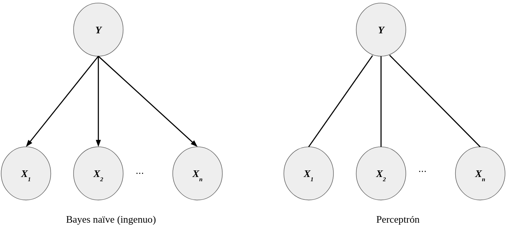
Los modelos generativos (como Bayes ingenuo) pueden
modelarse como una gráfica que se dirige de las categorías o clases a
los ejemplos; los modelos discriminativos (como el perceptrón) están
determinados por una gráfica no dirigida.
Definición 1.7 (Modelo generativo). Un modelo
generativo es un modelo gráfico dirigido que estima distribuciones de
datos
condicionadas a una clase
de la siguiente forma:
Donde
son las entradas del vector
.
Tanto en la Definición 1.6
y 1.7, los casos de factorización
son excepcionales. En los modelos generativos se asume que los datos
observados
fueron generados por una clase
.
De tal forma que se puede hacer una clasificación basada en la clase que
con mayor probabilidad genera
.
Un modelo generativo típico es el de Bayes naïve o ingenuo (Figura 1.2).
Dentro del aprendizaje profundo se tienen modelos tanto de índole
discriminativo como generativo. En este texto abordamos en mayor
amplitud los modelos discriminativos. Los modelos generativos tienen
particularidades que no profundizaremos. Algunas redes generativas son
los autoencoders variacionales o las máquinas de Boltzman. También
existen modelos híbridos, que combinan módulos generativos con
discriminativos; tal es el caso de las Redes Generativas Adversariales o
GANs.
Entrenamiento y evaluación
Dos partes esenciales en el procesamiento de aprendizaje es el
entrenamiento y la evaluación. Entrenar un modelo es el proceso central
del aprendizaje. Durante el entrenamiento, se obtiene los pesos óptimos
de una red neuronal, los cuales les permitirán resolver los problemas
específicos. La evaluación, por su parte, nos dice la capacidad de
generalizar que tiene una máquina de aprendizaje.
Generalmente el proceso de aprendizaje consta de los siguientes
pasos: 1) generar un modelo de aprendizaje a partir de entrenar la
máquina utilizando datos de entrenamiento (ejemplos); y 2) determinar la
capacidad de generalizar del modelo a partir de aplicarlo en datos
nuevos para determinar qué tan bien los resuelve (véase Figura 1.3). El proceso de entrenamiento
determina la forma en que la máquina resolverá el problema, es
propiamente el aprendizaje. La evaluación es esencial para conocer la
capacidad de nuestro modelo para resolver el problema.
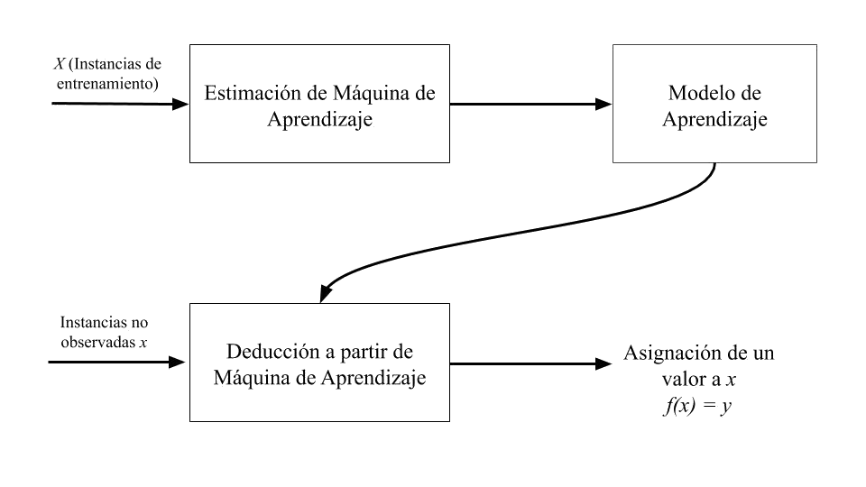
Proceso de aprendizaje
En el entrenamiento y la evaluación buscaremos minimizar una función
de riesgo (también llamada función objetivo) que nos
indica qué tan bien está resolviendo la tarea la máquina de aprendizaje.
Para definir la función de riesgo, hablaremos de una función de
pérdida, que es una función
,
donde
es el espacio de las máquinas de aprendizaje que dependen de los
parámetros
.
Esta función puede entenderse como un indicador de qué tanto la máquina
se equivoca en el problema.
Distinguimos dos funciones de riesgo, la primera de ellas responde al
riesgo de generalización:
Definición 1.8 (Función de riesgo de
generalización). Dada una función de pérdida
y una máquina de aprendizaje
,
una función de riesgo de generalización es una función
que se define como:
donde
la función de distribución sobre el espacio de datos.
La función de riesgo de generalización no se puede calcular
empíricamente; es decir, a partir de un conjunto de datos, pues busca
representar el espacio del problema, que generalmente es continuo y
demasiado grande. Esta función busca determinar la capacidad de la
máquina de aprendizaje sobre todo el espacio del problema. Para tratar
de estimar la capacidad de generalización de un modelo se usan técnicas
de evaluación que nos permitirán determinar, de manera aproximada, qué
tan bien lo hace el modelo de aprendizaje en el problema (véase la
Sección 1.4.2).
En el entrenamiento, la estimación del modelo se realiza mediante un
conjunto de datos finito. Por tanto, determinamos una función de riesgo
empírico.
Definición 1.9 (Función de riesgo empírico).
Dada una función de pérdida
y una máquina de aprendizaje
,
se le llama función de riesgo empírico
a la función definida como:
Decimos
es el tamaño del dataset o el número de ejemplos.
La función de riesgo empírico, que corresponde a la etapa de
entrenamiento, busca estimar los parámetros
que minimicen la función. De esta forma, el problema de aprendizaje
corresponde a un problema de optimización. Por tanto, se habla de la
minimización del riesgo empírico.
Definición 1.10 (Minimización del Riesgo Empírico).
El principio de la minimización del riesgo empírico (Empricial
Risk Minimization o ERM) señala que en el aprendizaje el mejor
conjunto de parámetros o pesos
para una máquina de aprendizaje
es aquel que minimice la función de riesgo empírico. Formalmente:
Este principio es de gran relevancia para la teoría de aprendizaje,
puesto que, bajo las condiciones necesarias, se puede comprobar que con
el ERM podemos obtener la máquina de aprendizaje
que solucione adecuadamente el problema que nos interesa. Esto queda
manifiesto en el siguiente teorema:
Teorema 1.1. La minimización del riesgo empírico
converge en probabilidad a la minimización del riesgo de generalización.
Esto es:
cando
.
El Teorema 1.1, que es elaborado en textos
sobre teoría de aprendizaje como el de , apunta que con un número
suficientemente grandes de datos podemos estimar, durante el
entrenamiento, una función que resuelva eficientemente el problema. En
este contexto, la capacidad de generalizar del problema depende del
proceso de optimización en el entrenamiento. Si consideramos los
teoremas de aproximador universal (Sección [sec:UniversalApproximator]),
podemos concluir teóricamente que podemos estimar funciones que
resuelvan prácticamente cualquier problema. En la teoría de aprendizaje,
sin embargo, es necesario estudiar bajo que condiciones se puede
asegurar la convergencia, así como la relación del tamaño del conjunto
de datos y la cercanía de la función del riesgo empírico y el riesgo
general.
Para realizar esto de manera empírica, al menos en el caso
supervisado, se toma un conjunto de datos
.
El conjunto de datos se divide en dos partes: entrenamiento y
evaluación, aunque algunas otras veces se considera también la
validación. Se suele usar un esquema 70-30, que consiste en:
Conjunto de entrenamiento (70%): con el que se genera el modelo
de aprendizaje durante la fase de entrenamiento.
Conjunto de evaluación (30%): Con el que se evalúa el modelo
aprendido.
Conjunto de validación: Representa un 10% de los datos; se
utiliza para ajustar hiperparámetros de la máquina de aprendizaje y se
suele integrar a los datos de entrenamiento, una vez validado el modelo.
Se suele usar un 10% que se toma del subconjunto de evaluación.
Este esquema será general cuando se trate de problemas supervisados.
Los problemas no supervisados se tratan de forma distinta, pues suelen
ser más complejos de evaluar. En la Sección 1.4.2 abordamos
con más detalle las cuestiones de evaluación.
Entrenamiento
El proceso de entrenamiento consiste en estimar un modelo de
aprendizaje; el modelo de aprendizaje es el conjunto de parámetros
óptimo, que resuelva de la manera más eficiente el problema al que nos
enfrentamos. Según el tipo de problema, tanto la máquina de aprendizaje
como el proceso de entrenamiento pueden variar.
Una distinción esencial en los problemas de aprendizaje es la de los
problemas supervisados contra los no supervisados (véase Sección 1.3). Para los fines que
perseguimos, será de principal importancia los problemas supervisados.
Estos problemas son aquellos donde los datos son de la forma
,
tal que
es un ejemplo y
es su supervisión, la respuesta esperada para este caso. Distinguimos,
además, dos problemas básicos dentro de los casos supervisados: la
regresión y la clasificación.
Entrenamiento en regresión
La regresión busca estimar una máquina de aprendizaje
donde
es el espacio de los ejemplos y
.
Esto último nos señala que la máquina de aprendizaje busca obtener
valores en un espacio continuo. Por tanto, la función de pérdida
indicará qué tan lejos está la predicción de
con respecto al valor esperado
.
En la regresión se predice un valor real continuo (que puede ser un
intervalo o todo el conjunto de los reales), por lo que la máquina de
aprendizaje no da una respuesta correcta o incorrecta en términos
discretos; podemos hablar, más bien, de qué tan cercano o lejano está el
valor de la máquina de aprendizaje del valor real.
Un ejemplo de regresión es el estimar el valor del precio de autos
según el modelo de éstos. El entrenamiento constaría de una serie de
datos
donde
es un valor que representa el modelo del auto (por ejemplo, 2000, 2005),
mientras que
es el valor del precio de ese auto. En la Figura 1.4 se muestran algunos datos con
los que el modelo se podría entrenar. En este ejemplo, podría pasar que
un mismo modelo de automóvil tenga dos valores de precios distinto
(véanse los datos con modelo 2000); podemos pensar que hay variables que
no estamos tomando en cuenta (la marca, el uso). Por tanto, más que
estimar el valor exacto, lo que el modelo buscará predecir es el valor
esperado. En este caso, siempre habrá un margen de error entre el valor
de los datos y el que la máquina de aprendizaje predice, pero buscamos
que este margen de error sea el más pequeño posible.
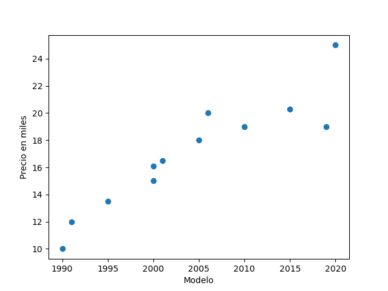
Ejemplo de regresión: estimar precios de autos por su
modelo
En la regresión, usaremos una función de pérdida que nos permita
determinar qué tan cercano del valor real está el valor predicho.
Definimos entonces la función
.
Con esta función de pérdida, nuestra función de riesgo estará definida
por el error cuadrático:
El objetivo del entrenamiento será minimizar esta función dada los
ejemplos del conjunto de entrenamiento
.
Minimizar esta función implica minimizar el valor de la diferencia que
la máquina de aprendizaje
predice con respecto a los valores reales
.
Usamos la norma euclidiana ya que la regresión puede predecir vectores
continuos. En el ejemplo anterior, la predicción es un escalar, por lo
que está norma sólo representa el cuadrado de la resta. En general, los
problemas de regresión toman como función de riesgo el error
cuadrático.
Problema de clasificación
En el problema de clasificación, la predicción es discreta. La
máquina de aprendizaje debe asignar a cada dato
una clase o categoría en un conjunto finito de éstas. Es decir, la
máquina de aprendizaje es una función
,
donde
es el espacio de datos y
son las clases. De esta forma, la función de pérdida nos indicará en que
casos la máquina de aprendizaje ha asignado la clase correcta y en qué
casos ha errado en la asignación.
La forma más simple de clasificación es la clasificación binaria. En
ésta, el conjunto de clases es
y el objetivo de la máquina es asignar 1 cuando el vector de entrada
pertenezca a la clase y 0 cuando no. Por ejemplo, si nuestro problema es
clasificar un conjunto de síntomas dentro de una enfermedad, la máquina
de aprendizaje
asignará 1 cuando los síntomas representados en el dato
correspondan a la enfermedad y 0 cuando no lo hagan. En la Figura 1.5 se puede observar la
representación de un problema de clasificación: los puntos representados
por vectores en
se separan en dos clases disjuntas.
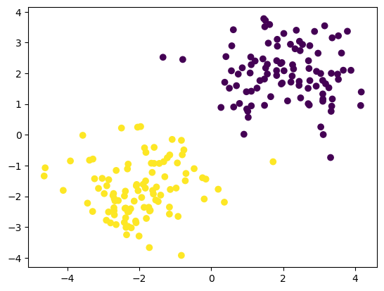
Ejemplo de un problema de clasificación binaria
Una primera intuición al respecto de la función de riesgo es que
podríamos aplicar el error cuadrático medio también para los problemas
de clasificación. De hecho, notamos que si la predicción de la máquina
es errada, entonces
,
mientras que si la predicción acierta, entonces
.
Al aplicar el error cuadrático a un problema de clasificación se obtiene
el número de errores que realiza
.
Sin embargo, en la práctica usar el error cuadrático no suele ser
eficiente. En los problemas de clasificación, los modelos de
aprendizaje, tales como las redes neuronales, más que predecir si un
dato de entrada pertenece o no a una clase, el modelo estima una
probabilidad de que el dato pertenezca a tal clase. De tal forma que
es una función de probabilidad.
Abordemos primero el caso binario. En este caso, buscamos que cuando
el dato
pertenece a la clase 1, la función
sea cercana a 1. Mientras que si el dato no pertenece, entonces
debe acercarse a 0, o lo que es lo mismo,
debe ser cercano a 1. Por tanto, podemos definir la siguiente función de
riesgo para clasificación binaria:
Cuando tengamos la clase
,
el minimizar esta función corresponde a maximizar la función
gracias al símbolo negativo. Cuando
,
se maximizará
que corresponde a minimizar
.
Ahora, en el caso general, cuando contamos con
clases, podemos usar un principio similar. Buscaremos que cuando un
elemento pertenezca a una clase, la probabilidad
sobre esta clase se maximice. Generalmente, en la clasificación
multi-clase
corresponde a un vector de probabilidades, donde cada entrada
es la probabilidad de la clase
.
Por tanto, la función de riesgo que definiremos estará dada como:
donde
es una función indicadora definida como:
A esta función se le llama
la entropía cruzada. En general, esta función será
central en las redes neuronales, y la revisaremos con más detalle cuando
abordemos el entrenamiento en éstas.
Generalización de la
función de riesgo
propone una función de riesgo general en la teoría de aprendizaje
estadístico. En la teoría de aprendizaje estadístico, se asume que los
datos son generados por una distribución de probabilidad
.
El objetivo del aprendizaje es encontrar una función
que sea lo más cercana posible a la función de probabilidad real
.
Una forma de medir la cercanía entre distribuciones de probabilidad es
usando la divergencia de Kullback-Liebler o divergencia
KL. Ésta se define como:
La divergencia KL cumple que siempre es mayor a 0, y es 0 cuando
.
De tal forma que la divergencia KL nos dice qué tanto se aleja la
estimación
del valor real de la distribución de los datos
.
La divergencia KL se usa como función de riesgos en algunos modelos
neuronales, como las Generative Adversarial Networks (GANs) en
su versión más simple. Sin embargo, en otros casos es difícil de
implementar debido a que la distribución real
,
no es conocida.
Para lidiar con esto, se aprovechan resultados teóricos que nos
llevan a proponer las funciones de riesgo de entropía cruzada y error
cuadrático medio para los problemas de clasificación y regresión,
respectivamente. La entropía cruzada, en su forma general, se define
como:
Podemos comprobar que esta definición de entropía cruzada puede darse en
términos de la divergencia de KL y de la entropía de
Shannon, la cuál es una medida de información definida como:
Lema 1.1. La entropía cruzada
se define como:
Proof. Sea
una distribución sobre
,
y sea
una distribución empírica también sobre
.
Entonces:
◻
Con base en este resultado, podemos obtener la equivalencia de
minimizar la entropía cruzada y la divergencia KL.
Teorema 1.2. Minimizar la entropía cruzada
minimiza la divergencia KL. Esto es:
Proof. La demostración usa el Lema 1.1 y parte
del hecho de que la entropía de Shannon no depende de los parámetros
,
sólo la entropía cruzada depende de éstos; por tanto, el argumento que
minimiza sólo se busca en la entropía cruzada. Desarrollando:
◻
Podemos, entonces, enfocarnos únicamente en la entropía cruzada. De
hecho, dentro de las redes neuronales, la entropía cruzada será la
función de riesgo de la que generalmente partiremos. Sin embargo, al no
conocer la distribución real de las clases
,
podemos utilizar la función indicadora
(notando que
).
En los problemas de clasificación, siempre buscaremos minimizar la
entropía cruzada. En los problemas de regresión, minimizamos el error
cuadrático. En el siguiente resultado podemos ver que esto equivale a
minimizar la entropía cruzada (bajo ciertas condiciones).
Proposición 1.1. Asúmese que la distribución de
es normal con media
y varianza 1, entonces:
Proof. Si
tiene distribución normal con media
y varianza 1, entonces:
Si minimizamos la entropía cruzada con respecto a esta distribución,
obtenemos:
◻
En la regresión, los valores que se pueden estimar por una máquina de
aprendizaje, como una red neuronal, no son valores precisos, sino los
valores esperados o medias. Del Teoremas 1.2 y la
Proposición 1.1 podemos ver que la divergencia
KL es un caso general de la entropía cruzada, y a su vez la entropía
cruzada generaliza el error cuadrático medio. En lo que sigue usaremos
la entropía cruzada extensivamente como función de riesgo en las redes
neuronales para clasificación; por su parte, el error cuadrático medio
se usará en problemas de regresión.
Evaluación
La evaluación es un proceso fundamental en toda metodología de
aprendizaje automático. El proceso de evaluación consiste en determinar
la capacidad de generalización de la máquina de aprendizaje. Como no es
factible evaluar las predicciones de la máquina de aprendizaje sobre
todos los datos, se utilizan estrategias estadísticas para evaluar la
calidad de las predicciones. La evaluación también depende del tipo de
problema. Pasamos a revisar los tipos de evaluación más comunes para
regresión y clasificación. Finalmente, revisamos de forma breve la
evaluación en problemas no supervisados.
Evaluación de regresión
En los problemas de regresión, se busca estimar un valor esperado
dado un dato de entrada
.
El valor
es la media de los valores
.
Como tenemos un valor continuo, la evaluación debe determinar el error
en términos de qué tan alejado está el valor predicho del valor real.
Una forma simple de hacer esto es por medio del Mean Absolute
Error.
Definición 1.11 (Mean absolute error). El error
absoluto medio (o Mean Absolute Error) de las predicciones de
una función
sobre un conjunto de datos de evaluación
está dado como:
Esta función de evaluación determina el promedio del error que comete
la máquina de aprendizaje
.
Otra forma de determinar el error, es a partir del error cuadrático
medio.
Definición 1.12 (Mean Squared Error). El error
cuadrático medio (o Mean Squared Error) de las predicciones de
una función
sobre un conjunto de datos de evaluación
está dado como:
Tanto el error absoluto medio como el error cuadrático medio son
métricas que toman valores desde 0 a infinito. Claramente, si la máquina
no comete errores, cualquiera de las métricas dadas será igual a 0. Sin
embargo, cuando la máquina de aprendizaje comete errores, en ambos casos
es difícil comparar la capacidad de una misma máquina de aprendizaje
sobre diferentes problemas, pues los valores no están acotados
superiormente. Para lidiar con esto, se propone una métrica de
evaluación que toma valores entre -1 y 1.
Definición 1.13 (Coeficiente de determinación).
El coeficiente de determinación o puntaje
sobre las predicciones de una función
sobre un conjunto de datos de evaluación
está dado como:
donde
es la media empírica de la variable
.
El coeficiente de determinación se interpreta de forma distinta a las
métricas de errores. Si la máquina de aprendizaje no comete errores,
entonces
.
Entre más errores cometa, entonces el coeficiente será más cercano a 0 o
será negativo. Aunque debe observarse que el hecho de que sea 0 no
implica que el error sea máximo, el error será 0 siempre que el valor de
sea similar al valor medio de
.
Ejemplo 1.2. Para ejemplificar el uso de estas
métricas consideremos que se tiene una máquina de aprendizaje que
predice como se muestra en el Cuadro 1.1.
Ejemplo de los valores reales
de regresión y los valores predichos
1
1
2
3
2.5
2
3
4
1.5
1
Sabiendo que la media empírica sobre
es
,
obtenemos los resultados del Cuadro 1.2.
Métricas de evaluación de regresión
MAE
MSE
0.6
0.5
0
Se puede observar que en este ejemplo el valor de
es 0, aunque los erores MAE y MSE no son necesariamente altos.
Evaluación de clasificación
En la clasificación, se estiman valores de clases. Estos valores son
discretos y generalmente representan valores 0,1,2,...,
.
El objetivo de la evaluación es determinar qué tan bien la máquina de
aprendizaje puede aprender a clasificar los datos en sus clases
correctas. La forma más simple de hacer esto es obteniendo el valor
promedio de los aciertos. A este tipo de métrica se le llama exactitud o
Accuracy. Sin embargo, la información que aporta la métrica de
exactitud no es suficiente. Muchas veces queremos saber qué tan preciso
resulta el modelo para una clase, o qué tantos elementos de una clase
puede clasificar adecuadamente.
Para lidiar con esto, en la clasificación se suelen utilizar otro
tipo de métricas. En particular, se suele usar una matriz de
confusión.
Definición 1.14 (Matriz de confusión binaria).
Una matriz de confusión para un problema de clasificación binaria es
una matriz de
que se representa como:
Real /
Predicha
Positiva
Negativa
Positiva
Verdaderos positivos (TP)
Falsos negativos (FN)
Negativa
Falsos positivos (FP)
Verdaderos negativos (TN)
Las columnas corresponden a la clase predicha por la máquina de
aprendizaje, y los renglones corresponden a las clases reales.
En la matriz de confusión, se pone el número de valores que coinciden
entre las predicciones de la máquina de aprendizaje y los valores
reales. Estos se basan en una clase (generalmente la clase
:
los valores positivos son las predicciones de esta clase, y los
negativos son las predicciones sobre la clase contraria (la clase
).
Con respecto a esto, se tienen 4 casos:
Verdaderos positivos: Los verdaderos positivos
son aquellos valores que realmente pertenecen a la clase positiva y que
la máquina dijo que pertenecían a esta clase.
Verdaderos negativos: Son aquellos valores que
pertenecían a la clase negativa y que la máquina clasificó en esa
clase.
Falsos positivos: Son los errores en que la
clase negativa real es clasificada por la máquina como positivos.
También se llama error de tipo II.
Falsos negativos: Son los errores en que la
clase positiva real es clasificada por la máquina como negativos.
También se llama error de tipo I.
Como se puede observar, los aciertos están en la diagonal de la
matriz. Con base en la matriz de confusión podemos calcular diferentes
tipos de métricas de evaluación.
Definición 1.15 (Precisión). La métrica de
precisión se define sobre la clase positiva (1) como:
Corresponde a la columna positiva de la matriz de confusión.
En contraste a la precisión, se tiene la medida de exhaustividad:
Definición 1.16 (Exhaustividad). La métrica de
exhaustividad o recall se define sobre la clase positiva (1)
como:
Corresponde al renglón positivo de la matriz de confusión.
La precisión y la exhaustividad suelen ser complementarias. Un modelo
con alta precisión puede llegar a tener baja exhaustividad y viceversa.
Si tanto la exhaustividad como la precisión son altas, el modelo ha
aprendido adecuadamente. Para evaluar la precisión y la exhaustividad de
manera simultánea, se usa la media geométrica entre ambas métricas.
Definición 1.17 (Medida
).
La medida
es la media geométrica de la precisión y la exhaustividad, determinada
de la siguiente forma:
Es común reportar estas medidas cuando se tiene una clasificación
binaria, además de la exactitud. En términos de la matriz de confusión,
podemos entender la exactitud de la siguiente
forma:
Ejemplo 1.3. Supongamos que, después de
entrenar, obtenemos un modelo que hace las predicciones
,
mientras que las predicciones reales son
.
Entonces, para cada ejemplo se tienen los resultados mostrados en el
Cuadro 1.3.
Ejemplo de resultados de predicciones
,
comparados con valores reales
Ejemplo
0
1
2
3
4
5
6
7
8
9
0
0
0
0
0
1
1
1
1
1
0
1
0
1
0
1
1
1
1
0
Para el ejemplo 1, la clase real es 0 y la predicción es
acertada, pues predice la clase 0. En el ejemplo 2, la clase real es 0,
pero la máquina de forma errónea le asigna un 1. Con base en estos
resultados contruimos la matriz de confusión.
Real /
Predicha
Positiva
Negativa
Positiva
4
1
Negativa
2
3
A partir de esta matriz de confusión podemos calcular las
diferentes métricas de evaluación. En el caso de la precisión
tenemos:
Por su parte, la exhaustividad es:
Por tanto, podemos calcular la métrica
de la siguiente forma:
Esta métrica nos dice de forma más global qué tan bien lo está
haciendo el modelo. Podemos contrastarla con la métrica de exactitud que
también es global.
La medida de exactitud se puede interpretar que el modelo acierta
el 70% de las veces. Como vemos, además el valor es cercano al de
.
Para generalizar la evaluación a diversas clases, primero que nada
debemos mencionar que la evaluación se hace sobre cada una de las
clases. En el caso binario, las métricas se realizan sobre la clase 1,
que se llama clase positiva. En este caso, la clase de interés variará y
las métricas se aplicarán en cada clase. En primer lugar, generalizamos
el concepto de matriz de confusión.
Definición 1.18 (Matriz de confusión). Una
matriz de confusión
para clasificación
-aria
es una matriz de
que se define como:
donde
y
.
Es decir, la matriz de confusión contiene en cada entrada el número
de valores que se intersectan entre las diferentes clases reales y las
clases predichas por la máquina de aprendizaje. Puede verse que en el
caso en que las clases sean
tenemos la matriz binaria. De igual forma, podemos generalizar las
métricas de evaluación.
Definición 1.19 (Precisión). La precisión de un
modelo de clasificación
-aria
para la clase
se define como:
Definición 1.20 (Exhaustividad). La
exhaustividad de un modelo de clasificación
-aria
para la clase
se define como:
Finalmente, tenemos también la medida
para cada una de las clases definida de forma similar al caso
binario.
Definición 1.21 (Medida
).
La medida
para un modelo de clasificación
-aria
para la clase
se define como:
Ejemplo 1.4. Supóngase que se tiene un modelo
que realiza las predicciones
para un conjunto de datos con clases reales
.
En el Cuadro 1.4 se muestran los resultados
obtenidos con este modelo de aprendizaje.
Ejemplo de resultados de predicciones
,
comparados con valores reales
para una predicción multiclase
Ejemplo
0
1
2
3
4
5
6
7
8
9
0
0
0
1
1
1
1
2
2
2
2
0
0
0
1
2
0
1
2
2
De estas predicciones, obtenemos la matriz de confusión de
que se muestra en el Cuadro 1.4. Por
ejemplo, para la clase real 0, podemos observar que tuvo 2 aciertos,
pero que uno de los datos que pertenecían a esta clase, el modelo lo
asignó como parte de la clase 2, por lo que este 1 se coloca en el
último renglón de la columna correspondiente a esta clase. Puede verse
que aquí los aciertos se encuentran en la diagonal, mientras que los
errores son los números fuera de ésta.
Matriz de confusión para un ejemplo
multicalse
Real /
Predicha
Clase 0
Clase 1
Clase 2
Clase 0
2
2
0
Clase 1
0
1
1
Clase 2
1
1
2
A partir de esta matriz de confusión podemos obtener las métricas
de evaluación para cada clase. Por ejemplo, para la clase 0 tenemos:
Y la exhaustividad está dada como:
Podemos observar que la precisión toma el valor de la diagonal y divide
entre los valores de la columna, mientras que la exhaustividad divide
entre la suma de los valores del renglón.
Evaluación no supervisada
La evaluación de un conjunto no supervisado presenta la dificultad de
no contar con un indicador de cuáles son los valores óptimos que debe
obtener la máquina de aprendizaje. Para realizar una evaluación de un
modelo no supervisado, se suele definir un gold-standard.
Definición 1.22 (Gold-standard). Un
gold-standard es un conjunto
donde cada
es una posible solución al problema; por ejemplo, un grupo óptimo para
una agrupación de los datos.
El gold-standard funciona como una especie de supervisión, y
muchas veces no es posible obtenerlo. Se utiliza principalmente en
problemas de agrupamiento. A partir de éste se pueden definir métricas
para la evaluación de modelos no supervisados.
Definición 1.23 (Pureza). Sea
el conjunto de grupos (clústers) realizado por un algoritmo no
supervisado de agrupamiento; y sea
el gold-standard. Entonces, definimos la pureza como:
La pureza determina qué tan similares son los grupos del modelo con
respecto a los del gold-standard. También podemos definir la
métrica de información mutua.
Definición 1.24 (Información mutua). Sea
el conjunto de grupos (clústers) realizado por un algoritmo no
supervisado de agrupamiento; y sea
el gold-standard. Asúmase que se tiene la distribución conjunta
,
definimos la información mutua entre ambos conjuntos como:
Ejemplo 1.5. Supóngase que se tiene un modelo
que realiza el agrupamiento de un conjunto de datos en tres grupos como
se muestra en la Figura 1.5.
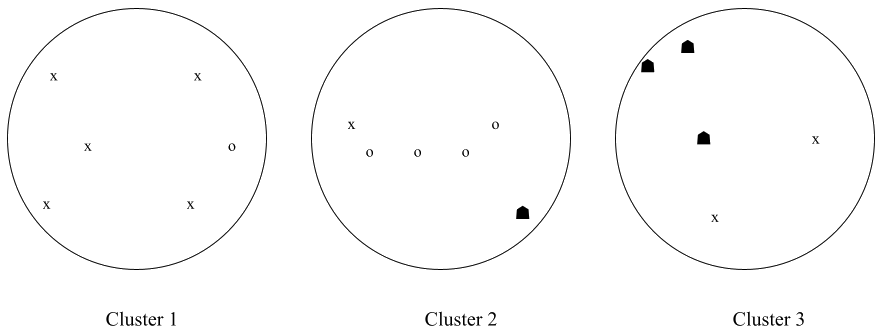
Ejemplo de agrupamiento en 3 grupos. El gold-standard
está definido por las formas de los puntos
El gold-standard está determinado por las formas de los datos,
que también define tres grupos. De esta forma, podemos calcular la
pureza: ésta nos dice que para el primer clúster del modelo
tenemos que determinar las intersecciones con el gold-standard. En la
figura, el clúster 1 intersecta con el grupo formado por x y con los
círculos, mientras que la intersección con el grupo de las figuras en
negro es nula. Por tanto, la cardinalidad de las intersecciones es 4, 1
y 0, respectivamente. El máximo es, por tanto, 4. Procediendo de esta
forma obtenemos la pureza:
Para calcular la información mutua, tenemos que estimar las
probabilidades conjuntas entre los grupos del modelo y del
gold-standard. Si tomamos como
al grupo x, tenemos que la probabilidad frecuentista es
.
Asimismo, notamos que si
es el grupo conformado por los puntos en negro, notamos que
.
Procediendo de esta forma, obtenemos que
.
Subajuste y sobreajuste
Dentro de la teoría de aprendizaje tiene especial relevancia estudiar
la relación entre el error de entrenamiento y el error de
generalización. Garantizar que la diferencia entre estos errores sea
pequeña determina la calidad del aprendizaje, pues esto determina que un
buen proceso de entrenamiento conlleva una buena generalización del
modelo.
Definición 1.25 (Capacidad de generalización).
Dado un riesgo de entrenamiento
y un riesgo de generalización
,
la capacidad de generalización del modelo
que depende del conjunto de parámetros
está determinado por:
Bajo este criterio, podemos hablar de tres posibles casos que
determinan dos conceptos importantes en la teoría de aprendizaje: el
subajuste y sobreajuste.
Definición 1.26 (Subajuste). El subajuste (o
underfitting) se da cuando el error de entrenamiento es alto y,
por tanto, también es alto el error de generalización bajo el modelo
obtenido.
Bajo el subajuste, la capacidad de generalización no es buena, pero
esto se debe a que el modelo no puede aprender adecuadamente y esto se
refleja también en el entrenamiento. El subajuste se da, por lo general,
cuando se tiene un modelo de poca capacidad, es decir, que no es capaz
de ajustarse a los datos. Por ejemplo, en la Figura 1.7 se muestra el caso del
subajuste, donde por medio de un modelo lineal (estimación por medio de
una recta) se busca aproximar en un problema de regresión de datos que
no tienen una dependencia lineal. Por tanto, para corregir el subajuste
se suele buscar un modelo de mayor capacidad (en el caso del ejemplo, un
modelo polinomial).
Otro caso se da cuando la capacidad de generalización es mala, pero
no se puede ver durante el entrenamiento.
Definición 1.27 (Sobreajuste). El sobreajuste (u
overfitting) se da cuando el error de entrenamiento es bajo,
pero el error de generalización es alto.
El sobreajuste, de forma metafórica, se da cuando el modelo de
aprendizaje memoriza sobre los datos de entrenamiento, pero no es capaz
de generar un conocimiento que le permita generalizar. En la Figura 1.7 se puede ver que un modelo
de gran capacidad se ajusta de manera muy precisa a los datos que
observa durante en el entrenamiento, pero precisamente por esto, su
capacidad de generalizar se ve limitada. Para corregir el sobreajuste se
proponen varias perspectivas:
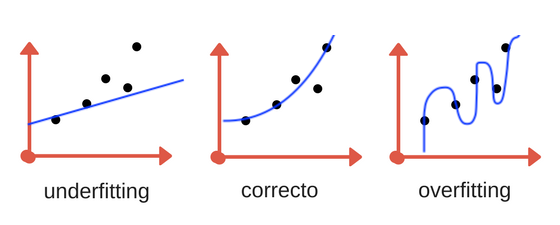
Ejemplos de overfitting y underfitting en un problema de
regresión
Utilizar un modelo de aprendizaje de menor capacidad, de tal
forma que su capacidad de ajustarse a los datos de entrenamiento se
reduzca. Esto implica la suposición de que el problema tiene una
solución más sencilla; por ejemplo, si los datos tienen una dependencia
lineal, utilizar un modelo de regresión polinomial podría llevar al
sobreajuste, por lo que es preferible usar un modelo lineal.
Aumentar el número de datos de tal forma que el modelo pueda
observar mejor el comportamiento del problema (véase la Sección 1.5.3). Aumentar el número de
datos permite que un modelo pueda observar mejor la distribución de los
datos. Hay una relación fuerte entre el número de datos y la capacidad
del modelo. Generalmente, cuando se cuenta con pocos datos se prefiere
un modelo de baja capacidad para evitar el sobreajuste, mientras que un
modelo de alta capacidad requiere de una mayor cantidad de
datos.
Para evitar el sobreajuste en las redes neuronales es común
utilizar diferentes estrategias que caen bajo el concepto de
regularización. La regularización será revisada en el Capítulo [chap:regularization].
Finalmente, hablamos de una capacidad de generalización correcta
cuando tanto el error de entrenamiento como el de generalización son
ambos buenos (cercanos a 0). Poder garantizar que un modelo de
aprendizaje tenga una buena capacidad de generalización al tener un
error de entrenamiento bajo es una parte importante de la teoría de
aprendizaje (véase ).
Representación de datos
Una máquina de aprendizaje es una función que toma de entrada una
representación de los datos que, generalmente, se da de forma tensorial;
es decir, como un arreglo numérico. El tipo de representación que
obtendremos de los datos depende en gran medida de las características
de estos. En particular, se tienen dos tipos generales de datos: datos
estructurados y datos no estructurados.
Definición 1.28 (Datos estructurados). Los datos
estructurados son aquellos datos que se encuentran bien organizados bajo
criterios específicos, a los cuales es fácil de acceder, así como son
sencillos de procesar por una computadora.
Los datos estructurados pueden encontrarse en base de datos, hojas de
cálculo o formularios. Cuando contamos con datos estructurados, podemos
representarlos en vectores en
.
Cada una de las dimensiones del vector representa una de las celdas de
la tabla de datos. Por ejemplo, supóngase que se tiene la siguiente
tabla de información:
Dato
Edad
Peso
Altura
1
35
74.3
175
2
27
63
172
Estos datos se encuentran organizados y son fáciles de interpretar
por una computadora. La información cuenta con tres campos ‘edad’,
‘peso’ y ‘altura’, por lo que se representarán en vectores de 3
dimensiones. Por ejemplo, el dato 1 se representa como el vector:
En una representación
vectorial se asume que las entradas de los vectores son variables
aleatorias. Cada vector
es un vector aleatorio cuyas entradas son valores de las variables
.
Se asume que las variables son independientes. De esta forma:
Cada valor que toma una variable
se conoce como rasgo (o feature). Al espacio
de los vectores de los datos
se le conoce como espacio de rasgos (feature
space). De tal forma, una conjunto de datos es el muestreo de un
fenómeno que presenta valores específicos para las variables aleatorias
definidas. En general, el conjunto de datos se representa como una
matriz
,
donde cada uno de los
renglones es un dato (vector) con
dimensiones.
Hemos tomado un ejemplo en que los datos están en principio en un
formato numérico. Sin embargo, se pueden presentar otros casos en que se
tengan datos sin un formato numérico, datos categóricos.
Definición 1.29 (Datos categóricos). Los datos
categóricos son variables que se identifican por medio de cadenas de
texto: nombres o categorías.
Los datos categóricos pueden ser clases cerradas, como un conjunto de
categorías de nivel educativo, o clases abiertas, como nombres propios.
En general, no existe un orden para este tipo de datos, mas que el orden
lexicográfico que, en la mayoría de los casos, no es informativo para
los modelos de aprendizaje. Podemos considerar el siguiente ejemplo:
Dato
¿Alergias?
Nivel educativo
Nombre
1
Sí
Primaria
Pedro
2
No
Licenciatura
María
En este caso, los datos estructurados no presentan características
numéricas. La primera variable ‘¿alergias?’ es, de hecho, una variable
booleana pues puede tomar únicamente dos valores: ‘sí’ y ‘no’. En este
caso, su representación numérica se basa en los valores booleanos: 1
para ‘sí’ y 0 para ‘no’.
La variable ‘nivel educativo’ posee una estructura jerárquica, que va
de un nivel más bajo hacia un nivel más alto. Podemos considerar varios
niveles y a cada nivel asignarle un nivel ascendente:
Pre-escolar
Primaria
Secundaria
Preparatoria
Licenciatura
Posgrado
1
2
3
4
5
6
De esta forma, la representación numérica corresponde al valor
numérico asignado previamente.
Finalmente, la variable de ‘nombre’ contiene un número abierto de
valores que representan el conjunto de posibles nombres. En este caso,
su representación es problemática, pero dentro del aprendizaje profundo
pueden representarse de manera sencilla los datos de entrada para
después aprender una representación más efectiva. En particular, dado un
conjunto de valores
,
se asocia a cada objeto con un índice
y se genera un vector one-hot que representa al objeto
con índice
;
las entradas del vector one-hot se definen como:
Las redes neuronales pueden aprender una función que tome este vector
indexal y lo represente en un vector de rasgos distribuido (con entradas
continuas); a este tipo de representaciones se les conoce como
embeddings. La asignación de los índices es arbitraria,
y se asocia a cada uno de los valores categóricos.
En el ejemplo anterior, tendríamos un índice para ‘Pedro’ y otro para
‘María’. La dificultad es que esta representación está limitada a los
valores observados en el conjunto de datos. Se puede utilizar una
etiqueta especial para aquellos casos que no son observados en el
conjunto de datos de entrenamiento. De esta forma, la representación de
los datos del ejemplo anterior sería la siguiente:
Dato
¿Alergias?
Nivel educativo
Pedro
María
1
1
2
1
0
2
0
5
0
1
Cada dato está representado por un vector de 4 dimensiones. Un
conjunto de datos puede contener variables de diferentes tipos,
numéricas o categóricas. La representación vectorial de estos datos
requieren de un análisis de las variables que los representan. El
aprendizaje profundo permite tener representaciones más sencillas, ya
que éste es parte del aprendizaje representacional; es decir, aprende
representaciones (en las capas ocultas) que permiten solucionar el
problema. Por esto mismo, el aprendizaje profundo presenta grandes
ventajas para trabajar con datos no estructurados.
Datos no estructurados
Las redes neuronales surgieron como soluciones para problemas sobre
datos estructurados (perceptrón y redes feedforward). Sin embargo, su
flexibilidad ha permitida adapatarlas a problemas para datos con
estructuras más complejas, los datos no estructurados.
Definición 1.30 (Datos no estructurados). Los
datos no estructurados son aquellos datos que carecen de organización y
estructura aparente.
El nombre de ‘no estructurado’ podría hacernos pensar que estos datos
no tienen estructura. Más bien, este tipo de datos cuenta con una
estructura subyacente que no es comprensible (sin procesamiento) por una
computadora. Ejemplos típicos de datos no estructurados son el texto y
las imágenes. También pueden presentarse otros tipos de datos en que un
conjunto de elementos se relacionan entre sí para conformar una elemento
mayor. Estos datos pueden representarse por gráficas
representacionales.
Cada uno de estos tipos de datos tiene un manejo particular: se
representan mediante diferentes relaciones. Asimismo, se suelen procesar
por medio de diferentes redes neuronales. Por ejemplo, las imágenes se
procesan por medio de redes convolucionales (Capítulo [chap:Convolucionales]),
mientras que el texto se puede procesar por medio de redes recurrentes o
transformers (Capítulos [chap:Recurrentes] y [chap:Attention]).
Imágenes
Las imágenes se representan por medio de píxeles que son vectores que
codifican los colores. Una imagen en escala de grises puede codificarse
por medio de una valor escalar. Una imagen con colores se representa por
medio de los valores de rojo, verde y azul o RGB. Llamaremos a cada uno
de estos valores de los tres colores un canal. Un píxel puede tener
cuatro canales en
RGB-,
donde además del rojo, verde y azul se considera un valor
que codifica la transparencia del píxel. Por tanto, cada píxel será un
vector en
donde
es el número de canales (1, 3 ó 4). Una imagen será, entonces, una
arreglo rectangular de píxeles. Cada imagen tendrá una altura
y una anchura
.
Por tanto una imagen será un dato
.
En la Figura 1.8 se muestra un ejemplo con una
imagen en escala de grises. Esta imagen se codifica por medio de un
canal; es decir,
y tiene una altura de 8 y anchura también de 8 píxeles. Por tanto, es un
dato en
.
Una imagen con un mayor número de canales implicaría que cada píxel
fuera un vector de mayor dimensionalidad.
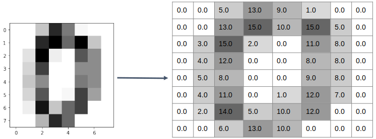
Codificación de una imagen en escala de grises
Las imágenes deben ser procesadas conservando la información de la
estructura de los píxeles, pues estos no son independientes, si no que
dependen de los píxeles que están cercanos a ellos. Una primera
aproximación a su procesamiento es el aplanamiento
(flattening).
Definición 1.31 (Flattening). El flattening o
aplanamiento es el mapeo de un tensor
hacia un vector
de dimensión igual al producto
.
Ejemplo 1.6. Supóngase que se tiene una imagen
de un sólo canal (en escala de grises) de tamaño
(altura y anchura). El aplanamiento de esta imagen será un vector de
dimensión
.
A partir del procesamiento de aplanamiento se puede aplicar un método
de aprendizaje automático tradicional. Sin embargo, este tipo de métodos
no son capaces de determinar la estructura subyacente de los datos, pues
se asume que las entradas de este vector aplanado son independientes.
Dentro del aprendizaje profundo se proponen las redes convolucionales
para procesar de manera eficiente las imágenes. Estas se tratan en el
Capítulo [chap:Convolucionales].
Texto
El texto presenta otra complejidad ya que no hay información numérica
que permita representar estos datos. La primera dificultad que presenta
el texto es que la computadora no es capaz de determinar cuáles son las
unidades que componen una cadena textual. En principio, podríamos asumir
que estas unidades son las palabras, pero este concepto suele ser
ambiguo, por lo que se prefiere usar el término de tóken. Un tóken es
una cadena que compone una unidad textual más grande. Pueden ser
palabras, pero en la práctica suelen ser elementos más pequeños que las
palabras (a veces llamados subwords). Por ejemplo, del
siguiente texto:
En algún lugar, de cuyo nombre no quiero acordarme.
Se pueden obtener los siguientes tókens (separados por comas):
en, algún, lugar, de, cuy##, ##o, nombre, no, quier##,
##o, acord##, ##ar##, ##me.
La mayoría de los tókens corresponden a palabras, pero otros tókens
corresponden a unidades significativas más pequeñas. En estos casos, se
usa una marca ## para indicar que conforman cadenas más complejas.
Asimismo, se suele eliminar los signos de puntuación y pasar el texto a
minúsculas, aunque no en todos los casos, pues esto depende de la tarea
que se busca resolver.
Los tókens de una cadena textual pueden ser tratados como variables
categóricas, de tal forma que se pueden representar por medio de
vectores one-hot. Sin embargo, la representación one-hot asume que cada
tóken es ortogonal a los otros, por lo que no existe ninguna relación
entre los diferentes tókens. Esto contradice la noción que tenemos del
lenguaje, donde hay conjuntos de palabras que tienen significados
similares. Para lidiar con esto, en el aprendizaje profundo se propone
el uso de encajes de palabras o word embeddings.
Definición 1.32 (Encajes de palabras). Dado un
tóken
con una representación one-hot
,
un encaje de palabra es un vector que resulta del mapeo:
donde
es una matriz de pesos y
es la dimensión que se desea.
Es decir, el encaje de palabra es una proyección lineal
(multiplicación por una matriz) del vector one-hot de la palabra. La
matriz de pesos
es una matriz que se aprende dentro de la red neuronal. De nuevo, las
redes neuronales sirven para aprender representaciones de los datos. Los
encajes de palabras entran dentro de estos procedimientos. Los tókens
dentro de un texto tienen una relación secuencial que no puede ser
capturada por un método tradicional de aprendizaje automático. Dentro
del aprendizaje profundo, este tipo de datos suele trabajarse por medios
de las redes neuronales recurrentes (Capítulo [chap:Recurrentes]) y actualmente
por medio de los transformers (Capítulo [chap:Attention]).
Otros tipos de datos
El aprendizaje profundo permite trabajar con diferentes estructuras
relacionales. Podemos hablar de datos no estructurados que se componen
por medio de relaciones de sus componentes.
Definición 1.33 (Datos con estructuras gráficas).
Un dato con estructura gráfica es un dato que cuenta con: 1) un
conjunto de elementos representados por vectores
;
y 2) relaciones entre estos elementos. Por tanto, pueden representarse
por medio de una gráfica
donde los vértices
se asocian a los vectores
y las aristas
representan las relaciones.
El aprendizaje profundo permite la construcción de redes neuronales
que permiten interpretar estas relaciones dentro de los datos para
capturar sus estructuras subyacentes. Tanto las imágenes como el texto
pueden verse como este tipo de datos. En el caso de las imágenes, los
píxeles representan las aristas y las relaciones de vecindad de estos
píxeles las relaciones, lo que define una gráfica de cuadrícula (véase
la Figura 1.9). En el caso del texto,
las aristas son los encajes de palabra de los tókens y se tiene una
relación secuencial, lo que define una gráfica de cadena (Figura 1.9).
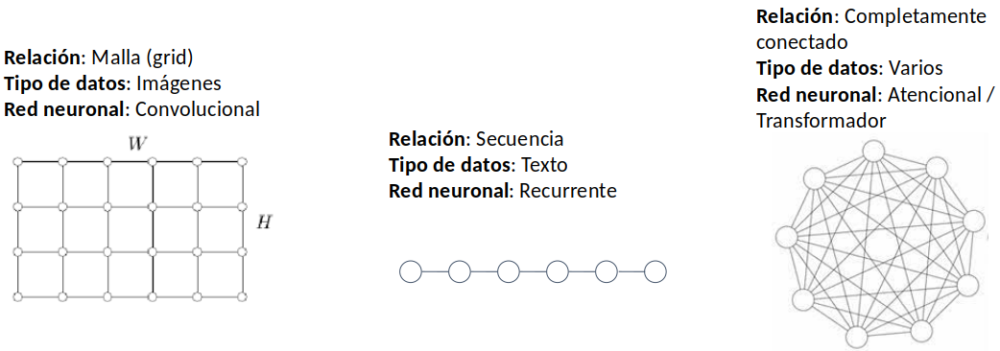
Diferentes estructuras de datos representados como
gráficas
Otro tipo de estructuras más complejas pueden definirse. Por ejemplo,
una figura en 3D se puede representar por un conjunto de vectores en 3
dimensiones y relaciones de triangulación que definen la superficie.
Normalización de datos
Muchos algoritmos de aprendizaje trabajan mejor cuando los datos
tengan una escala normalizada. En particular, cuando la distribución a
la que pertenecen está estandarizada. Es común que los datos se
normalicen llevándolos a una media 0 y a una varianza 1.
Definición 1.34 (Normalización). Sea
un conjunto de
datos. La normalización de un dato
se define como:
Donde
es la media empírica y
la desviación estándar.
La media empírica se estima a partir del conjunto de datos como:
Por su parte, la desviación estándar se calcula a partir de la media
como:
Como lo señalamos, la normalización de los datos lleva éstos hacia una
distribución normal estándar. Es decir, con media 0 y varianza 1.
Proposición 1.2. Sea
un conjunto de
datos. La normalización de los datos tiene una distribución normal
estándar
.
Proof. Demostramos que la media de los datos normalizados es
0. Sabemos que
es la media empírica de los datos, por lo que tenemos que:
Recuérdese que la
esperanza de una constante, como lo es
,
es esa constante. ◻
Existen otras formas de escalar los datos que permiten acotar los
valores que toman los valores de las variables. Por ejemplo, si buscamos
que los datos se encuentren acotados superiormente por 1 e inferiormente
por 0, podemos tomar la siguiente normalización:
Puede comprobarse que el valor máximo de los datos en esta normalización
es 1. Asimismo que el valor mínimo es 0. La normalización de los datos
ayuda al procesamiento de los datos. En el caso de las redes neuronales
la normalización será de gran importancia; más adelante revisaremos la
normalización por lotes (Sección [sec:Batches]).
Datos sintéticos
Una forma de mejorar la calidad del modelo de aprendizaje es
aumentando el número de datos de entrenamiento. Sin embargo, muchas
veces aumentar los datos resulta complicado por la misma dificultad que
presenta obtener estos datos de forma natural. En algunos casos será
posible generar datos de forma artificial a partir del conocimiento de
un conjunto de datos dado. A estos datos generados de forma artificial
los llamaremos datos sintéticos.
Los datos sintéticos consisten en datos generados de manera
automática por algún método, como algún algoritmo de aprendizaje
generativo o alguna estrategia que aproveche los datos conocidos para
modificarlos y así obtener nuevos datos. Aunque crear nuevos datos puede
resultar complicado para tareas como la estimación de probabilidades o
aprendizaje no supervisado. Es común que el aumento de datos se haga
dentro de los problemas de clasificación, donde se crea un nuevo dato
que pertenezca a algunas de las clases
.
Una forma común de aumentar los datos es aplicar una transformación a
los datos ya existentes. Sea
un conjunto de datos y
una transformación sobre este mismo tipo de datos, entonces podemos
crear nuevos datos
aplicando la transformación a los datos
.
Debemos tomar en cuenta que las transformaciones aplicadas nos den como
resultado el mismo tipo de datos que estamos considerando, así como que
generen datos que pertenezcan a la clase que nos interesa en el caso de
la clasificación.
Por ejemplo, si nuestros datos son imágenes, podemos aplicar
transformaciones como rotaciones, traslaciones o escalamientos. Este
tipo de transformaciones generan nuevas imágenes que pueden mejorar el
rendimiento de nuestro algoritmo de aprendizaje. Debemos tomar en cuenta
el objetivo de la tarea para limitar el tipo de transformaciones que
podemos aplicar. En una tarea de reconocimiento óptico de caracteres
(llevar la imagen de un texto a texto legible por computadora) las
imágenes no pueden tener rotaciones de 180 grados, puesto que esto
podría llevar a confundir una ‘b’ por una ‘d’. Pero se podrían aplicar
ligeras rotaciones o traslaciones de la imagen.
Otra forma de aumentar datos es introducir ruido. Por ejemplo, en un
conjunto de datos de audio (para tareas de voz a texto) se puede
introducir ruido gaussiano a los datos para generar nuevos datos
,
donde
es ruido de una muestra gaussiana. El ruido también se puede introducir
cuando tenemos tareas de regresión logística asumiendo que éste no
debería afectar la decisión de la máquina de aprendizaje. En la
Sección [sec:noise] veremos una técnica que
introduce ruido en diferentes niveles de una red neuronal profunda.
En general, los datos sintéticos se crearán dependiendo del tipo de
datos que estemos trabajando y la tarea que estemos resolviendo. Otras
estrategias que hagan uso del conocimiento de los datos (como generar
texto por medio de gramáticas formales o modificando ciertos tókens) se
pueden utilizar mejorando el rendimiento del aprendizaje. Estas
estrategias caen dentro de lo que en el área se ha dado en llamar
data augmentation o aumento de datos.
Conjetura de la variedad
El aprendizaje profundo es parte del aprendizaje representacional, el
cual se basa en aprender representaciones de los datos que permitan
encontrar una solución al problema planteado sobre estos datos. El
ejemplo más sencillo es el de la clasificación, donde un algoritmo de
aprendizaje buscará separar dos o más conjuntos de datos pertenecientes
a diferentes clases; si tomamos dos clases como en la Figura 1.10 (a) tenemos dos clases que
un algoritmo de clasificación lineal no podría separar. Este tipo de
algoritmos buscaría trazar una recta para separar los datos de ambas
clases. Claramente aquí no es posible. En 1.10
(b), por el contrario, tal separación es posible, pues podemos trazar
una recta que pase por en medio de ambos conjuntos de datos, separando
casi completamente ambas clases.
En la Figura 1.10 trabajamos con un mismo
conjunto de datos pero con diferentes representaciones. La
representación en (a) se basa en coordenadas euclidianas, mientras que
en (b) las coordenadas son polares. Esta simple modificación de las
coordenadas de los datos permite que en el primer caso no sea posible
resolver el problema con un algoritmo lineal, mientras que en el segundo
caso sí es posible.
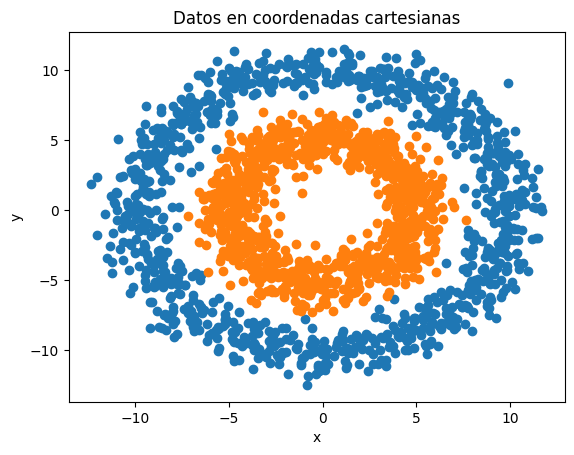
Datos en coordenadas euclidianas
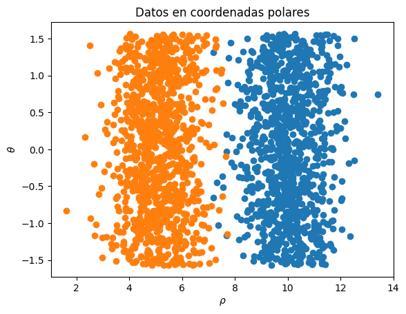
Datos en coordenadas polaresVisualización de un mismo conjunto de datos con dos tipos de
representaciones
Como veremos más adelante cuando tratemos de las redes neuronales
profundas, este tipo de redes aprenden representaciones que permitan
separar los datos de forma lineal. Es decir, dado un conjunto de datos
como los de la Figura 1.10
(a), estas redes aprenden una transformación de los datos que los
permite separarlas. Muchas veces, esta representación debe realizarse
sobre un espacio de mayor dimensión para poder encontrar una solución al
problema. Por ejemplo, en la Figura 1.11 se
puede ver una transformación de los datos de la Figura 1.10 (a) en un espacio de 3
dimensiones. En este espacio también se puede realizar una clasificación
lineal, pues se puede encontrar un plano que separa a las dos
clases.
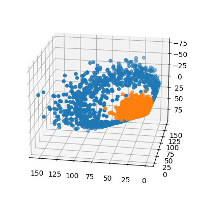
Proyección en 3 dimensiones de los datos de la Figura 1.10
El poder de las redes neuronales profundas radica principalmente en
su capacidad de aprender este tipo de representaciones a partir de
diferentes estructuras de datos de entrada. Bajo este supuesto, algo que
se ha propuesto dentro de la teoría del aprendizaje automático es lo que
se conoce como la conjetura de la variedad. Aquí explicamos de manera
superficial esta conjetura, pues no profundizamos en el concepto de
variedad, cuya definición formal omitimos.
Definición 1.35 (Variedad). Una variedad
-dimensional
es un conjunto localmente homeomorfo a
;
es decir, para cada elemento
existe una función continua (y con inversa continua)
que mapea los puntos en una vecindad de
,
,
a
.
Un ejemplo de variedad es una esfera, pues para cada punto en la
esfera podemos encontrar una vecindad de ese punto y una función que nos
permite mapear esa vecindad en
.
Si pensamos que esta esfera el el planeta Tierra, entonces el mapeo en
se puede ver como un mapa de una región de la tierra. En general, cuando
hablamos de variedades en
,
se trata de conjuntos acotados y cerrados. A partir de esto, en la
teoría de aprendizaje se asume la siguiente conjetura.
Definición 1.36 (Conjetura de la variedad). El
espacio de los datos
corresponde a una variedad.
La relevancia de esta conjetura es que nos dice que los datos están
conformados por subconjuntos acotados. Por ejemplo, esto se puede ver en
las imágenes. Las imágenes se encuentran acotadas, es decir, si nos
movemos demasiado del conjunto de imágenes encontraremos sólo ruido. La
conjetura de la variedad nos dice que las imágenes se encuentran en una
región del espacio en que se representan. Lo mismo se puede pensar con
los datos textuales, pues podríamos pensar que buscar de forma aleatoria
cadenas de caracteres, nos daría cadenas sin sentido en un lenguaje
dado.
La conjetura de la variedad también tiene consecuencia en la
aplicación de las redes neuronales a la resolución de tareas
específicas. Como veremos más adelante en la prueba de las redes
neuronales como aproximadores universales (Sección [sec:UniversalApproximator]),
la demostración de que una red neuronal profunda puede aproximar
cualquier función asume que el dominio de éstas es compacto. Es decir,
la conjetura de la variedad nos da condiciones para decir que una red
neuronal puede resolver los problemas sobre un conjunto de datos.
Regresión lineal
Tomaremos, como primer ejemplo concreto de un modelo de aprendizaje
automático, a la regresión lineal. La regresión lineal es un modelo,
como su nombre lo dice, lineal; es decir, busca aproximar un conjunto de
datos por medio de una función lineal: un hiperplano parametrizado por
un conjunto de pesos
y
.
Sea
un conjunto de datos supervisado. Como mencionamos en la Sección 1.3, el problema de regresión
asume que los valores a predecir pertenecen a un conjunto continuo.
Comenzamos por asumir que se trata de un intervalo de los números
reales. En los problemas de regresión, estimamos un valor esperado
condicionado a un valor de entrada
.
En particular, en la regresión lineal se asume que
(los valores a predecir tienen una distribución normal) con una media
lineal; esto es:
Es decir, la esperanza condicional de
dado el dato
es una función lineal dependiente de
y
.
Con base en esto, podemos definir la función objetivo,
,
que nos permita encontrar los parámetros
y
que mejor aproximen la media. Para poder determinar una función objetiva
adecuada, demostramos el siguiente resultado.
Teorema 1.3. Sea
un conjunto de datos en un problema de regresión lineal. Asúmase que
tiene distribución normal con media
.
Entonces:
Proof. Dado que se asume una media lineal
,
tenemos que:
Ya que el término
es constante, e ignorando
,
tenemos que:
◻
Este resultado señala que para encontrar la media que aproxime mejor
la distribución de los datos basta minimizar la función de error
cuadrático. Más aún, podemos notar que al encontrar la media
que minimiza la función objetivo, también minimizamos la varianza, la
cual está implícita en la función objetivo del error cuadrático. Ahora
podemos definir el método de regresión lineal.
Definición 1.37 (Regresión lineal). El método de
regresión lineal sobre un conjunto de datos
está dado por una función
definida como:
Y cuya función objetivo está dada por el error cuadrático medio:
Existen otras funciones objetivo que pueden llevar hacia la solución
del problema de regresión. En particular, también se puede definir la
función objetivo basada en el valor absoluto:
A esta función objetivo se le conoce como error absoluto medio (MAE del
inglés Mean Absolute Error). Sin embargo, es común utilizar el
error cuadrático en tanto esta función objetivo tiene derivadas en todos
los puntos. Con base en esta función objetivo podemos observar que una
solución analítica está dada en la siguiente proposición.
Proposición 1.3. Dado un problema de regresión
con matriz de datos
,
donde a cada dato se le ha concatenado un 1
(, y
es el vector de valores a predecir, los valores que minimizan la función
objetivo de error cuadrático,
,
en la regresión lineal están dados como:
donde
es la matriz de datos y
un vector con las clases de cada ejemplo como entradas.
Proof. Ejercicio. ◻
El concatenar un 1 a cada dato se hace para que la resolución del
problema se de en un solo paso. Pero pueden estimarse
y
de forma separada. Cabe mencionar que la regresión lineal también puede
resolverse por medio del método de descenso por gradiente que se
revisará en la Sección [sec:GradientDescent].
Ejemplo 1.7. Supongamos que tenemos el problema
de predecir el precio de una casa dependiendo de los metros cuadrados de
ésta. Formalmente, tenemos datos
donde
son los metros cuadrados e
son los precios. Los datos de entrenamiento se muestran en el Cuadro 1.6.
Datos de casas y sus precios
Núm. casa
Precio
(millones)
0
10
3
1
12
4
2
12
5
3
15
7
4
18
10
5
18
9
6
20
15
7
25
20
8
30
20
9
45
50
De igual forma, los datos se pueden visualizar en la Figura 1.12 (a), vemos que existe
cierta dependencia lineal. Para encontrar la recta que mejor aproxima
los datos debemos solucionar el problema de regresión lineal. Para esto,
primero generaremos una matriz con los datos de metros cuadrados,
agregando un 1 a cada entrada. Si llamamos a esta matriz
,
podemos observar que:
Más aún, podemos obtener
la inversa de este producto obteniendo la matriz:
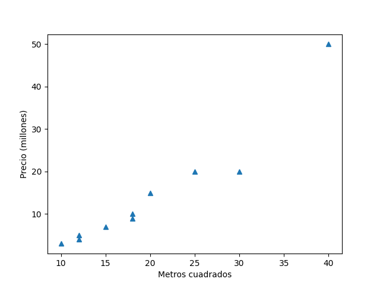
Datos del ejemplo de regresión
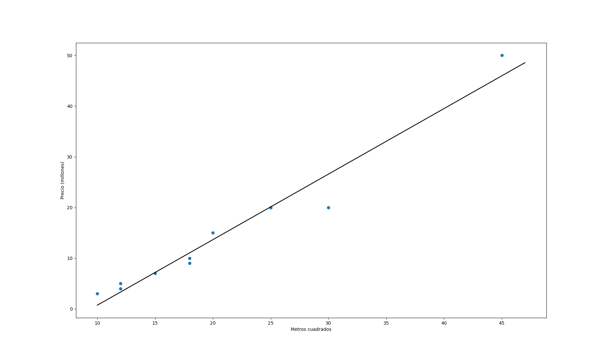
Recta estimadaEjemplo de aplicación de regresión a un conjunto de
datos y estimación del modelo lineal
Recordemos que la solución al problema de regresión está dado
como
.
Sabiendo que
es el vector
observamos que:
En este caso, la última entrada del vector resultante corresponde
a
.
Por lo que tenemos que
y
.
La función de regresión lineal obtenida está dada como:
La recta definida por esta función se puede observar en la Figura 1.12 (b). Esta recta es la
recta que minimiza la distancia promedio entre los puntos del conjunto
de datos. Si probamos el modelo obtenido a los datos obtenemos los
resultados obtenidos en el Cuadro 1.7.
Resultados de aplicar la predicción del modelo de regresión
lineal
Núm. casa
Precio
(millones)
Predicción
0
10
3
-0.01
1
12
4
2.84
2
12
5
2.84
3
15
7
7.14
4
18
10
11.4
5
18
9
11.4
6
20
15
14.3
7
25
20
21.4
8
30
20
28.6
9
45
50
42.9
Los datos del cuadro anterior no representan una evaluación, pues
la evaluación debe realizarse sobre un conjunto de datos que no ha sido
observado durante el entrenamiento. Tomemos el ejemplo de los datos en
el Cuadro 1.7.
Evaluación del modelo de regresión
Núm. casa
Precio
Predicción
Error
0
7
2
-3.1
5.1
1
15
7
7.19
-0.19
2
60
70
65.3
-4.7
A partir de estos datos podemos calcular el error cuadrático
medio y el coeficiente
.
Para el error cuadrático medio tenemos:
Para el coeficiente
debemos obtener la media de
sobre los datos de evaluación; ésta es
.
De esta forma obtenemos:
Notamos que el coeficiente
es cercano a 1, lo que nos indica que el modelo lo hace bien. De igual
forma, el error cuadrático medio nos muestra que la media del error no
es demasiado grande.
Regresión logística
Otro modelo lineal que será relevante para la discusión posterior es
el modelo de regresión logística. La regresión logística estima la
densidad probabilística de los datos con base en su pertenencia a un
conjunto de clases. Por tanto, si bien su salida es un valor continuo en
el intervalo
,
suele usarse como un método de clasificación. Asimismo, la estimación de
esta densidad probabilística se hace mediante una aproximación lineal.
Aquí revisamos el caso donde la clasificación es binaria, contamos sólo
con las clases 0 y 1 de salida y la probabilidad que estimamos es
,
esto es, la probabilidad que tiene un elemento de pertenecer a la clase
1. La regresión lineal se basa en el concepto de logit, que definimos a
continuación.
Definición 1.38 (Logit). Sea
la probabilidad de un evento. El logit de
es la diferencia logarítimica:
El logit determina la capacidad predictiva de una medida de
probabilidad (binaria). Por ejemplo, si
,
entonces el evento es completamente aleatorio y el logit es 0. Por su
parte, si
el logit crece y es positivo, mientras que si
,
el logit es negativo y decrece. La regresión logística asume que el
logit de la distribución es lineal, esto es que:
Donde
es el dato que condiciona la probabilidad
y
y
son los pesos que parametrizan la función lineal. Bajo esta suposición,
tenemos el siguiente resultado.
Proposición 1.4. Sea
.
Si
es la probabilidad que tiene
de pertenecer a la clase 1 y se asume que el logit es lineal, entonces:
Proof. Ejercicio. ◻
A la función de probabilidad que surge de la suposición de un logit
lineal se le conoce como función logística, aunque también es común
llamarle función sigmoide, principalmente en el área de aprendizaje
profundo; por tanto, es la terminología que usamos aquí. Es fácil notar
que
al multiplicar por el uno
.
Definición 1.39 (Función sigmoide). La función
sigmoide (o logística) es la función
definida como:
Aquí hemos definido la función sigmoide en un dominio real. Debemos
notar que los valores de 0 y 1 sólo se obtienen en el límite, por lo que
no los consideramos dentro del intervalo de la imagen de la función.
Finalmente, cuando tratamos con la regresión logística, nuestra función
objetivo será la entropía cruzada con base en las clases binarias.
Definición 1.40 (Regresión logística). Un modelo
de regresión logística está definido por una función
que asigna una probabilidad de clase y que se define como:
Con
y
pesos a aprender. La función objetivo del problema está dada como:
La función objetivo es la entropía cruzada entre la probabilidad
y la probabilidad
.
Puede comprobarse sin mucha dificultad que esta última probabilidad
cumple que:
Para obtener los pesos óptimos, se utiliza el método de gradiente
descendiente en el aprendizaje. Este método se revisará en la Sección [sec:GradientDescent] por lo
que omitimos aquí la ejemplificación del proceso de aprendizaje.
Ejemplo 1.8. Para ejemplificar la aplicación de
la regresión logística considérese los datos en la Figura 1.13 (a), donde los datos del
lado derecho pertenecen a la clase 1 y los datos del lado izquierdo
pertenecen a la clase 2. El objetivo de la regresión logística es
estimar la probabilidad de que un punto pertenezca a la clase 1 (a la
sección izquierda).
Observando los datos se puede inferir que la información que
determina la pertenencia de un dato a una clase es el valor sobre el eje
de las
:
si este es mayor a 0 el dato tendrá mayor probabilidad de pertenecer a
la clase 1, mientras que si es menor a 0, la probabilidad será más baja,
pues el dato pertenecerá a la clase 0. Podemos definir la siguiente
regla:
Donde
es la primera entrada del vector
.
Por tanto, la función
clasifica los datos en la clase a la que pertenecen.
Para expresar esto como un modelo de regresión logística podemos
observar que la probabilidad de pertenecer a la clase 1 está dada por
,
por lo que necesitamos los pesos
y
.
Por ejemplo, para el dato
tendremos el siguiente
resultado en la regresión logística:
Es decir, tiene una alta probabilidad de pertenecer a la clase 1, por lo
que el modelo asumirá que pertenece a esta clase. Puede comprobarse que
para el vector
la regresión lineal predice el valor
,
por lo que se asumirá que el dato no pertenece a la clase 1, sino a la
clase 0.
Visualización de datosClasificaciónEjemplo de aplicación de regresión logística a un
problema de clasificación
El modelo de regresión lineal asume una recta que separa el
espacio de datos en dos regiones como se puede ver en la Figura 1.13 (b). Esta recta pasa por el
valor 0 y mientras más alejados estén hacia la derecha los datos, mayor
la probabilidad de pertenecer a la clase 1. Por ejemplo, se puede
comprobar que
tiene probabilidad
,
por lo que su clasificación es complicada, aunque en la práctica los
puntos con probabilidad 0.5 suelen clasificarse en la clase 0.
Para evaluar podemos tomar un conjunto de datos de evaluación.
Asumiendo el esquema 70-30 podemos tomar 300 datos que tienen la misma
distribución que se muestra en la Figura 1.13.
La matriz de confusión se muestra en el Cuadro 1.9.
Matriz de confusión de clasificación con regresión
lineal
Real /
Predicha
Clase 0
Clase 1
Clase 0
150
0
Clase 1
3
147
A partir de los datos de la matriz de confusión es fácil calcular
la precisión, la exhaustividad, la medida
y la exactitud. Estas métricas se muestran en el Cuadro 1.8.
Resultados de la evaluación de la regresión
logística
Clase
Precisión
Exhaustividad
0
0.98
1
0.99
1
1
0.98
0.99
Exactitud
0.99
Ejercicios
De los siguientes ejemplos determine cuáles son los elementos: 1)
tarea
,
2) medida de desempeño
,
y 3) experiencia
.
Un sistema que aprende a detectar spam.
Detectar y etiquetar con una clase los objetos que aparecen en
una imagen.
Un sistema para predecir una enfermedad a partir de los síntomas
de un paciente.
Predecir el precio de un televisor dado los años de uso.
Generar voz sintetizada a partir de una entrada textual.
Dado el siguiente cuadro con las predicciones hechas por una
máquina de aprendizaje para predecir colores con los valores esperados
de la supervisión:
Predicción
v
v
a
a
r
r
v
a
r
r
v
v
a
v
v
Supervisión
a
a
a
a
a
r
r
r
r
r
v
v
v
v
v
obtener la matriz de confusión, los valores de precisión, recall
(sensitibity),
,
así como el micro y macro average por clase.
A partir de los siguientes datos de un agrupamiento:
Calcular la pureza de los clústers propuestos.
A partir del siguiente dataset:
Y
0.5
1
0
1
1
0
0
1
0.8
0
0.7
1
0.5
0
1
0.5
1
0
1
0
0.1
1
0
0
1
1
0
1
1
0
1
1
0.1
0.2
1
Hacer el análisis de cada variable (media, varianza) así como obtener
los valores de covarianza y calcular la correlación de las variables
y
con respecto a
.
A partir de los datos del ejercicio anterior, asumiendo que se
tienen los pesos
y
,
estimar las probabilidades y las predicciones de clase en base al modelo
de regresión lineal. Generar la matriz de confusión y las métricas de
evaluación de precisión, exhaustividad,
y exactitud.
A partir de los siguientes datos de entrenamiento:
x
y
0
0
1
2
1.5
2
3
3
3
2.5
3.5
4.5
5
6
Estimar la recta de regresión que minimice el error cuadrático medio
usando el algoritmo de mínimos cuadrados (nótese que
).
Evaluar el modelo usando MSE y MAE obtenido en los siguientes datos:
x
y
2.5
3.5
4
4.8
6
8
Demostrar que la divergencia KL,
,
es siempre mayor a 0 y sólo igual a 0 sii
para toda
.
Demostrar que la solución al problema de la regresión lineal está
dada por los parámetros:
donde
es la matriz de datos y
el vector de valores de supervisión.
Demostrar que si se asume que el logit es lineal, i.e.
,
entonces la probabilidad
está dada por
Calcular los siguientes valores:
Entropía cruzada de una variable con distribución real
y distribución empírica
.
La divergencia KL de las distribuciones anteriores.
Implementa los modelos de regresión lineal y regresión
logística.